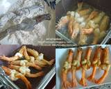

ซอสมะขามเป็นซอสที่เข้ากับเนื้อสัตว์ได้ทุกประเภท และซอสมะขามยังเหมาะกับอากาศร้อน ๆ
ของเมืองไทยด้วยนะคะ เพราะในมะขามเปียก มีกรดอินทรีย์ซึ่งมีฤทธิ์ช่วยระบายความร้อนของร่างกายด้วยค่ะ
ส่วนผสม
กุ้งสดตัวใหญ่ ( ไม่แกะเปลือกใช้มีดผ่าหลังกุ้ง) 10 ตัว
แป้งทอดกรอบ 2 ช้อนโต๊ะ
หอมแดง (ปริมาณตามชอบ)
กระเทียม (ปริมาณตามชอบ)
พริกขี้หนูแห้ง (ปริมาณตามชอบ)
ผักชี สำหรับโรยหน้า เล็กน้อย
น้ำมันสำหรับทอด
== ส่วนผสมซอสมะขาม==
น้ำเปล่า 1/4 ถ้วย
น้ำตาลปี๊บ 1+1/2 ช้อนโต๊ะ
น้ำตาลทราย 1/2 ช้อนโต๊ะ
น้ำปลา 1+1/2 ช้อนโต๊ะ
ขันตอนวิธีทำ
เวลาเตรียมส่วนผสม: 10 นาที
เวลาปรุงอาหาร: 10 นาที
1. กุ้งที่จะนำไปทอด จัดการแกะเปลือก เอาหัวกับหางไว้ แล้วตัดหนวดผ่าหลังเอาเส้นดำออก
ใช้มีดคม ๆ กรีดตรงท้องให้ขาด จัดการม้วนหางลอดใต้ท้องขึ้นมาด้านบน เพื่อเวลาทอดกุ้งจะได้ไม่งอ

2. ตั้งกระทะน้ำมัน ใส่กระเทียมและหอมแดงที่ซอยบาง ๆ ลงเจียวให้สีเหลืองสวย แยก
เจียวนะคะไม่เจียวรวมกัน เพราะทั้งสองอย่างสุกไม่พร้อมกันค่ะ จากนั้นใส่พริกขี้หนู
แห้งลงทอดต่อ ระวังไหม้ด้วยเพราะพริกสุกเร็วมาก
3. กุ้งที่เตรียมไว้จัดการชุบแป้งทอดกรอบหรือแป้งสาลีบาง ๆ ลงทอดต่อได้เลย ขั้นตอนนี้
ต้องไฟแรงนิดนึงนะคะ ถ้าไฟอ่อนกว่ากุ้งจะสุกทั้งตัวเนื้อกุ้งอาจจะสุกเกินไปและแข็ง
ไม่อร่อย ตักขึ้นให้กุ้งสะเด็ดน้ำมัน จัดใส่จานเตรียมไว้

4. ทำน้ำซอสมะขาม โดยใส่น้ำตาลปี๊บ น้ำตาลทราย น้ำปลา น้ำมะขามเปียกและน้ำเปล่า
ตั้งไฟให้น้ำซอสข้น ปิดไฟ เทใส่ถ้วยเตรียมไว้
5. ราดน้ำซอสมะขามลงบนตัวกุ้งที่ทอด และย่างเตรียมไว้ โรยด้วยกระเทียมเจียวหอม
เจียว พริกขี้หนูทอด และผักชี ก็เสร็จเรียบร้อยพร้อมเสิร์ฟแล้วค่ะ